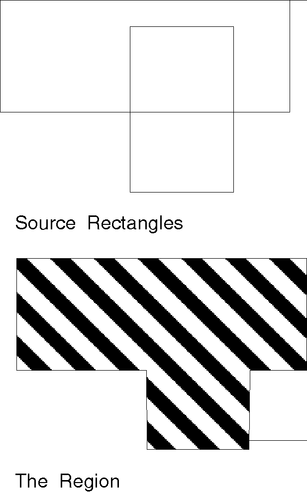

A region consists of one or more overlapping or separate rectangles in an application's device space. The sides of the rectangles are parallel to the x- and y-axes in the device coordinate space. An irregular, nonrectangular path can be converted into a region. However, unless otherwise specified, the assumption of this chapter is that a region is rectangular.
If a region consists of intersecting rectangles, the intersecting sides are always perpendicular. If the rectangles have no common elements, the region is defined as separate rectangles.
Unlike areas and paths, which are defined in world coordinates, regions are device-dependent and, so, are defined in device coordinates. The device coordinates are inclusive (inside the rectangle) at the bottom and left coordinate boundaries, and exclusive (outside the rectangle and clipped) at the top and right boundaries.
Each region is created for the device that currently is associated with a presentation space. Also, after creation, regions are available for various operations; a region handle identifies the region for subsequent operations.
The following figure shows a region that consists of two intersecting rectangles. An application defined the region by passing an array containing the coordinates for the two rectangles to GpiCreateRegion. The application then drew the region with GpiPaintRegion.

Defining a Region
This region comprises two overlapping rectangles.